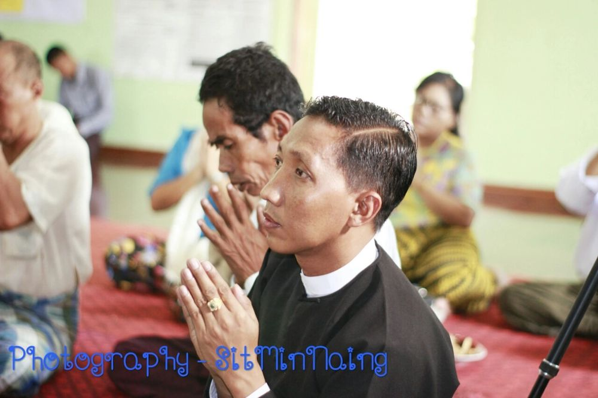
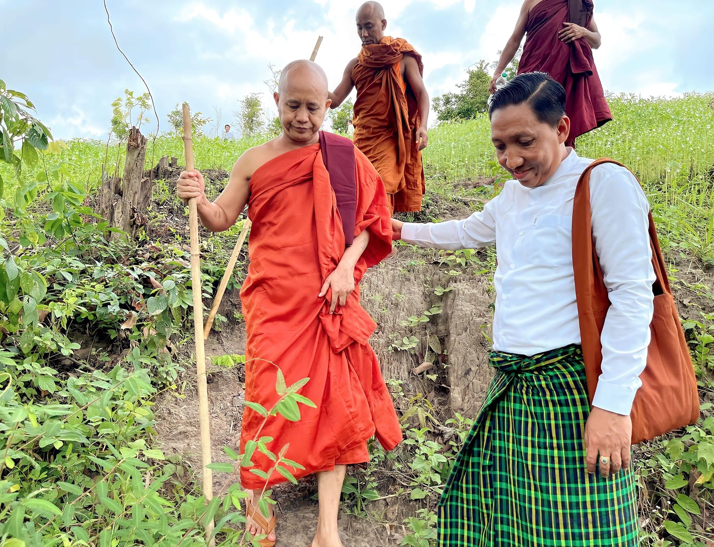
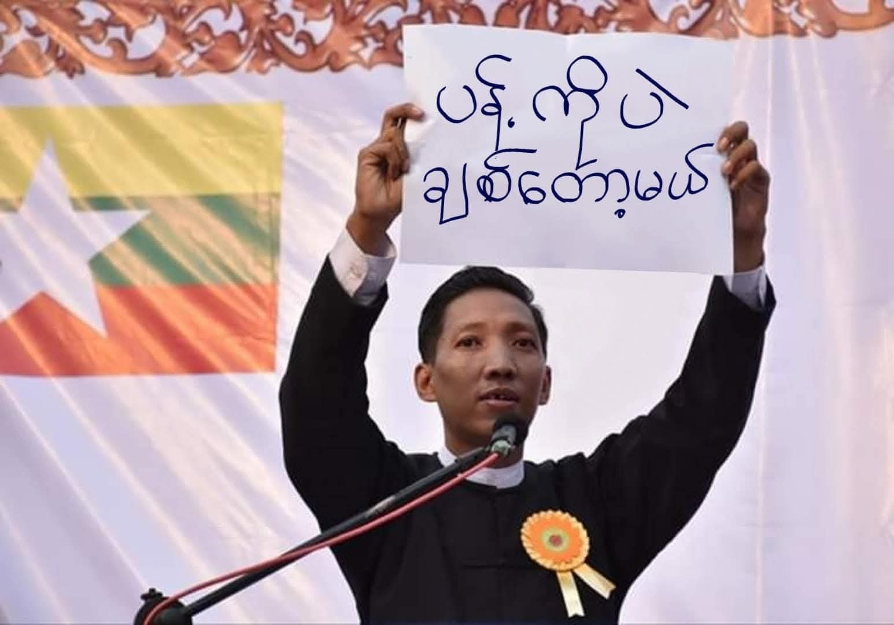
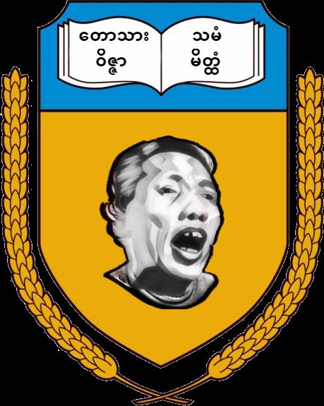
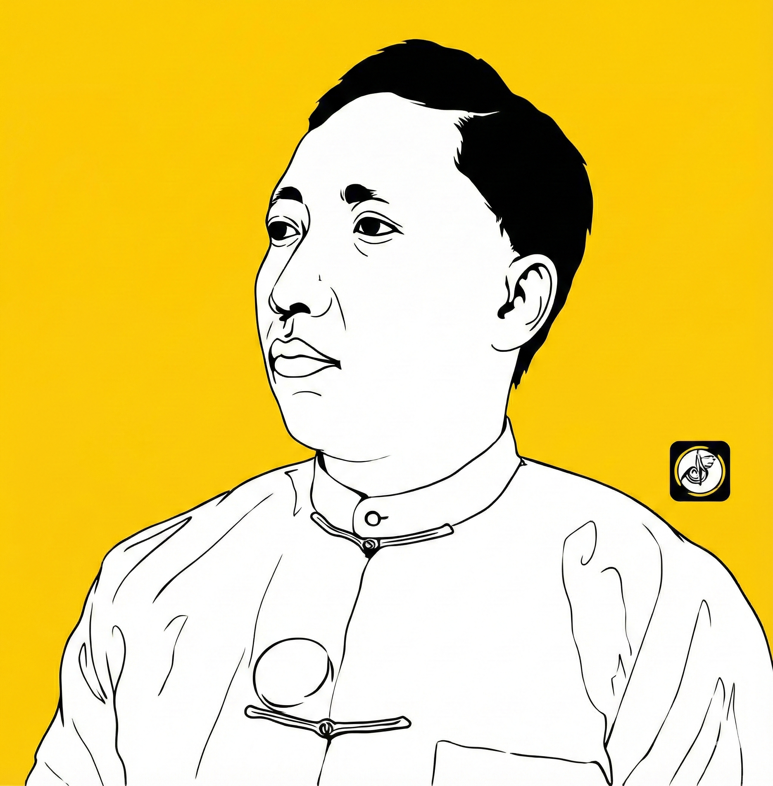

အမျိုးသားရေး
အမျိုးသားရေး
မြန်မာ့အမျိုးသားရေးနှင့် ကျွန်ုပ်တို့၏ တာဝန်
အမျိုးသားရေးဆိုသည်မှာ မိမိ၏အမျိုးကို ချစ်မြတ်နိုးခြင်း၊ ကာကွယ်စောင့်ရှောက်ခြင်းဖြစ်သည်။ ယဉ်ကျေးမှုနှင့် ဓလေ့ထုံးတမ်းများကို ထိန်းသိမ်းကာ...
ဆက်လက်ဖတ်ရှုရန်မဘသ

အမျိုးဘာသာ သာသနာ ကာကွယ်ရေး
သခင်ကြီး | Thakin Gyi
About Thakin Gyi
မြန်မာနိုင်ငံ၏ အမျိုးသားရေးလှုပ်ရှားသူ၊ ဗုဒ္ဓဘာသာ အမျိုးသားရေးဝါဒီ၊ ဥပဒေအကြံပေး၊ စာရေးဆရာနှင့် နိုင်ငံရေးခေါင်းဆောင်တစ်ဦးဖြစ်ပါသည်။ တောသားနှိမ်နင်းရေးအသင်း (Anti-Tarzam Association) ကို တည်ထောင်၍ လူမှုရေးပြဿနာများကို ဖြေရှင်းရန် ကြိုးပမ်းလျက်ရှိသည်။
"အမျိုးကိုစောင့်၊ ဘာသာကိုစောင့်၊ သာသနာကိုစောင့်"
Life Journey & Timeline
ထန်းတပင်မြို့နယ်၊ ရန်ကုန်တိုင်းဒေသကြီးတွင် ဇွန်လ ၁၆ ရက်နေ့၌ မွေးဖွားခဲ့သည်။ မိသားစုနှင့်အတူ ကလေးဘဝကို မြန်မာ့ယဉ်ကျေးမှုနှင့်အညီ ကြီးပြင်းခဲ့သည်။
ရန်ကုန်အဝေးသင်တက္ကသိုလ်မှ ဥပဒေဘွဲ့ (LL.B) ရရှိခဲ့သည်။ ဥပဒေပညာရပ်ကို နက်နဲစွာ လေ့လာခဲ့ပြီး အမျိုးသားရေးလှုပ်ရှားမှုများတွင် ဥပဒေအကြံပေးအဖြစ် ဆောင်ရွက်နိုင်ခဲ့သည်။
မြန်မာနိုင်ငံတွင် ဒီမိုကရေစီရောင်ခြည်ဦး အနည်းငယ်ကွန့်မြူးကာစ အချိန်တွင် အမျိုးသားရေး လှုပ်ရှားမှုများ စတင်ခဲ့သည်။ ဝီရသူ၏ လမ်းညွှန်မှုဖြင့် စာရေးဆရာဘဝမှ အမျိုးသားရေး အစွန်းရောက်ဘဝ ခံယူခဲ့သည်။

မဘသ (အမျိုးဘာသာသာသနာ ကာကွယ်ရေးအဖွဲ့) နှင့် ပူးပေါင်း၍ အမျိုးသားရေးလှုပ်ရှားမှုများကို စတင်ခဲ့သည်။
ပန်းတနော်မြို့နယ် ပြည်သူ့လွှတ်တော်ကိုယ်စားလှယ်လောင်းအဖြစ် ဝင်ရောက်ယှဉ်ပြိုင်ခဲ့သည်။ အမျိုးသားရေးဝါဒကို ကိုယ်စားပြု၍ ရွေးကောက်ပွဲတွင် ပါဝင်ခဲ့သည်။
အမျိုးဘာသာသာသနာ ကာကွယ်ရေးအဖွဲ့ (မဘသ) နှင့် ဆက်စပ်သော မြန်မာအမျိုးသားကွန်ရက်၏ ဥက္ကဋ္ဌအဖြစ် ဆောင်ရွက်ခဲ့သည်။
အမေရိကန်သံရုံးရှေ့တွင် ဘာသာရေးနှင့် လူမျိုးရေးဆိုင်ရာ ဆန္ဒပြပွဲကို ဦးဆောင်ကျင်းပခဲ့သည်။ နိုင်ငံတကာ၏ အာရုံစိုက်မှုကို ရရှိခဲ့သည်။
ဘာသာရေးနှင့် အမျိုးသားရေးဆိုင်ရာ ဆန္ဒပြပွဲကို ထပ်မံဦးဆောင်ခဲ့သည်။ သံဃာတော်များနှင့်အတူ ပူးပေါင်းဆောင်ရွက်ခဲ့သည်။

ဗဟန်းမြို့နယ်တရားရုံးမှ ခြောက်လထောင်ဒဏ်ချမှတ်ခံရပြီး အင်းစိန်ထောင်တွင် အကျဉ်းကျခံခဲ့သည်။ ယုံကြည်ချက်အတွက် ခံစားခဲ့ရသည်။

ဖိုးလောင်တီး ကလောင်အမည်ဖြင့် စာပေများ ရေးသားထုတ်ဝေခဲ့သည်။ အမျိုးသားရေး၊ ဘာသာရေးနှင့် လူမှုရေးဆိုင်ရာ စာအုပ်များ ထုတ်ဝေခဲ့သည်။

တောသားနှိမ်နင်းရေးအသင်း (Anti-Tarzan Association) ကို တည်ထောင်ဝ လူမှုရေးပြဿနာများဖြစ်သော တောသား/တာဇံများကို ပညာပေးခြင်းနှင့် နှိမ်နင်းခြင်းလုပ်ငန်းများ လုပ်ဆောင်လျက်ရှိသည်။

အမျိုးသားရေးလှုပ်ရှားမှုများနှင့် တောသားနှိမ်နင်းရေးလုပ်ငန်းများကို ဆက်လက်လုပ်ဆောင်လျက်ရှိသည်။ လူမှုကွန်ရက်များမှတစ်ဆင့် အများပြည်သူအား ပညာပေးလျက်ရှိသည်။

Anti-Tarzan Association
လူမှုကျင့်ဝတ်များကို မလိုက်နာသော၊ ယဉ်ကျေးမှုဆန့်ကျင်သော အပြုအမူများရှိသူများ၊ အများပြည်သူကို အနှောင့်အယှက်ပေးသူများ၊ လူမှုရေးပြဿနာများ ဖြစ်ပေါ်စေသူများကို ရည်ညွှန်းခြင်းဖြစ်သည်။ ယင်းပြဿနာများကို ပညာပေးခြင်းနှင့် တရားဥပဒေဘောင်အတွင်းမှ ဖြေရှင်းရန် ဤအသင်းကို တည်ထောင်ခဲ့သည်။
လူမှုကျင့်ဝတ်များနှင့် ယဉ်ကျေးမှုဆိုင်ရာ ပညာပေးခြင်း
ဥပဒေဘောင်အတွင်းမှ ပြဿနာများကို ဖြေရှင်းပေးခြင်း
ထိခိုက်နစ်နာသူများကို ဥပဒေအကူအညီပေးခြင်း
လူမှုကွန်ရက်များမှတစ်ဆင့် အများပြည်သူအား သတိပေးခြင်း

Facebook, Twitter စသော လူမှုကွန်ရက်များမှတစ်ဆင့် တောသားများ၏ လုပ်ရပ်များကို ထုတ်ဖော်ပြသခြင်းနှင့် အများပြည်သူအား သတိပေးခြင်း

ထိခိုက်နစ်နာသူများအတွက် ဥပဒေဆိုင်ရာ အကြံပေးခြင်းနှင့် တရားရုံးတင်ရန် ကူညီဆောင်ရွက်ပေးခြင်း

တောသားများကြောင့် ထိခိုက်နစ်နာသူများ၏ တိုင်ကြားချက်များကို လက်ခံဆောင်ရွက်ပေးခြင်း
Blog Posts & Articles by Thakin Gyi
အမျိုးသားရေး
အမျိုးသားရေးဆိုသည်မှာ မိမိ၏အမျိုးကို ချစ်မြတ်နိုးခြင်း၊ ကာကွယ်စောင့်ရှောက်ခြင်းဖြစ်သည်။ ယဉ်ကျေးမှုနှင့် ဓလေ့ထုံးတမ်းများကို ထိန်းသိမ်းကာ...
ဆက်လက်ဖတ်ရှုရန်
တောသားနှိမ်နင်းရေးတောသားနှိမ်နင်းရေးအသင်း (Anti-Tarzan Association) ၏ လုပ်ဆောင်ချက်များ၊ ရည်ရွယ်ချက်များနှင့် ဖြစ်စဉ်များ အသေးစိတ်...
ဆက်လက်ဖတ်ရှုရန်
ဥပဒေရေးရာတောသားများကြောင့် ထိခိုက်နစ်နာခဲ့ရသူများအတွက် ရရှိနိုင်သော ဥပဒေအကာအကွယ်များနှင့် တရားစွဲဆိုနိုင်သော နည်းလမ်းများကို...
ဆက်လက်ဖတ်ရှုရန်ဗုဒ္ဓဘာသာနှင့် မြန်မာ့ယဉ်ကျေးမှုကို ကာကွယ်စောင့်ရှောက်ရန် မဘသအဖွဲ့မှ ဆောင်ရွက်လျက်ရှိသော လုပ်ငန်းစဉ်များနှင့် ပြည်သူများ ပူးပေါင်းပါဝင်နိုင်မည့်...
ဆက်လက်ဖတ်ရှုရန်ဖိုးလောင်တီး ကလောင်အမည်ဖြင့် စာပေရေးသားလာခဲ့သော ခရီးစဥ်၊ ရေးသားခဲ့သော စာအုပ်များနှင့် စာဖတ်ပရိသတ်များထံ ပေးလိုသော...
ဆက်လက်ဖတ်ရှုရန်ယနေ့ခေတ် မြန်မာ့တောသားများအကြား လူမှုကျင့်ဝတ်ကျဆင်းလာမှုနှင့် ပြန်လည်မြှင့်တင်ရန် ဆောင်ရွက်သင့်သော အချက်များ...
ဆက်လက်ဖတ်ရှုရန်
✨ အထူးဆောင်းပါး
ဝင်းကိုကိုလတ်သည် မူလက "ဖိုးလောင်တီး" ကလောင်အမည်ဖြင့် စာပေများကို ရေးသားခဲ့သူဖြစ်သည်။ ဝီရသူ၏ လမ်းညွှန်မှုဖြင့် ကလောင်အမည်ကို "ဖိုးလောင်ထူး" သို့ ပြောင်းလဲကာ အမျိုးသားရေးစာပေများကို ရေးသားခဲ့သည်...
ဆက်လက်ဖတ်ရှုရန်
မဘသ
တစ်လင်တစ်ယား ဖြစ်စေရန် ရည်ရွယ်ပြဋ္ဌာန်းထားသော မျိုးစောင့်ဥပဒေကို ထောက်ခံပွဲများ ဦးဆောင်ကျင်းပခဲ့သည်။ အမျိုးသားရေးအစွန်းရောက် လှုပ်ရှားမှုများ၏ အစပျိုးချိန်ကာလဖြစ်သည်...
ဆက်လက်ဖတ်ရှုရန်
သမိုင်း
၂၀၁၇ ခုနှစ် ကြေးသွန်းဘုရားရှေ့တွင် NLD အစိုးရ ဆန့်ကျင်ရေး သပိတ်ပွဲလုပ်ချိန် ဝင်းကိုကိုလတ် ထောင်ကျနေခဲ့သည်။ ယင်းကာလအတွင်း အမျိုးသားရေး လှုပ်ရှားမှုများ အထွဋ်အထိပ်သို့ ရောက်ရှိခဲ့သည်...
ဆက်လက်ဖတ်ရှုရန်Photo Gallery

Get In Touch with Thakin Gyi